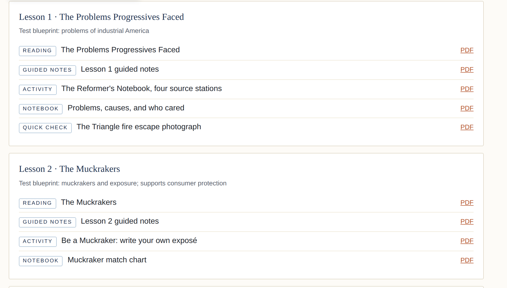
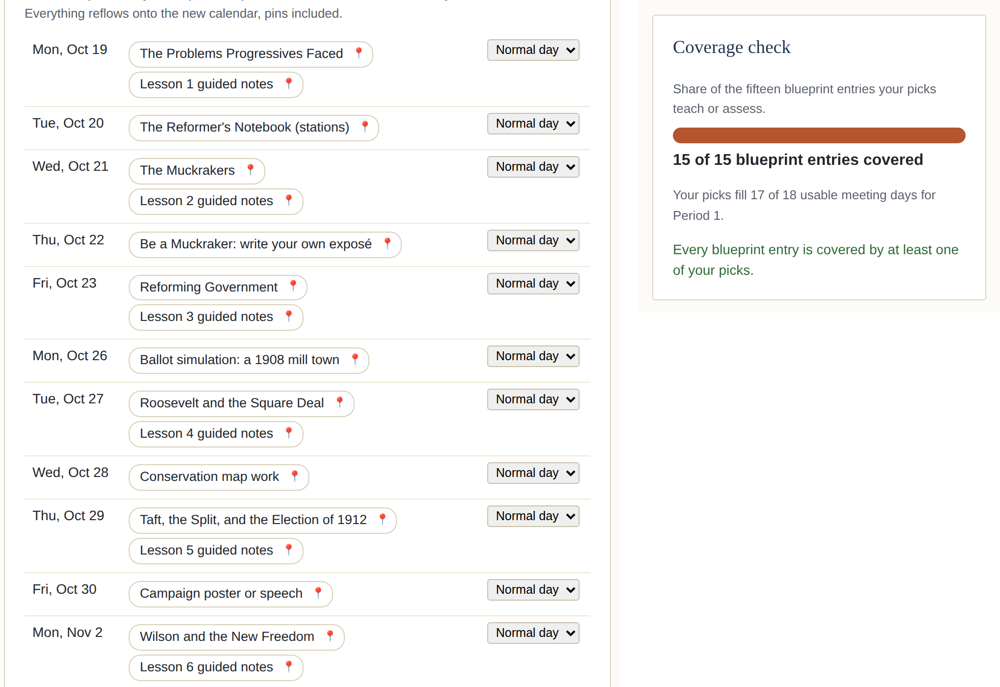
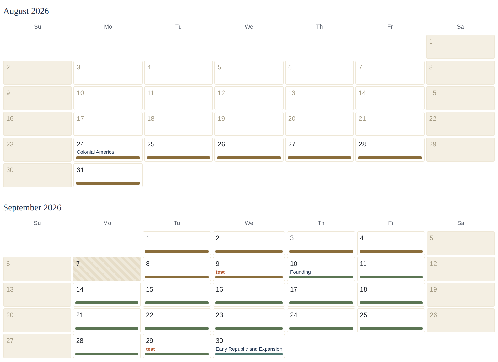
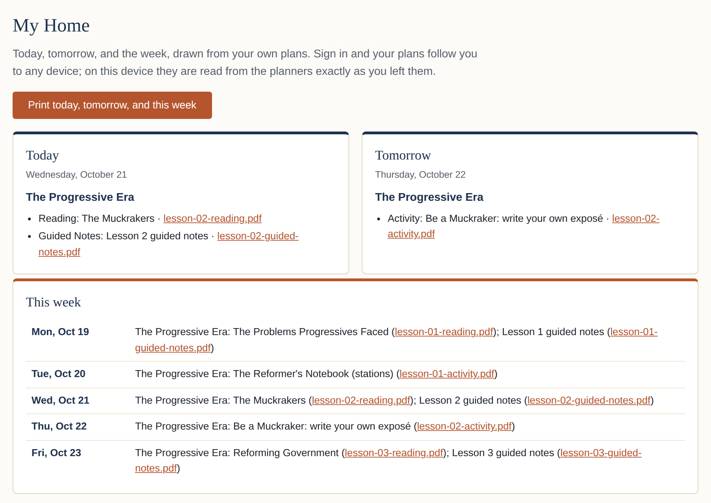

You downloaded one part of the Progressive Era unit. The whole course lives on our website. US History there has fifteen units, from Colonial America to Modern America, and every unit is built to the same plate as this one. The Progressive Era unit is free on the site, all of it. A subscription unlocks the rest of the course.

The Progressive Era unit page. Every lesson lists the same plate of materials, and every PDF includes the teacher key.
What every lesson includes
A reading written for the lesson
Guided notes matched to the reading
An activity, from source stations to a ballot simulation
A notebook page for the lesson's key ideas
A quick check, where the lesson calls for one
A slide deck with full teacher notes
Every unit ends with a review day and a unit test. The test blueprint is published with the unit, and every test item is tied to entries on that blueprint, so you can see what the test covers before you teach.

The same unit in the planner. Picks become dated school days, and the coverage panel checks them against the test blueprint.
Your picks, on your calendar.
Set up the year planner once with the first and last day of school, your grading period dates, your days off, and your state test or AP exam date if you have one. It lays the fifteen units across your real instructional days. In the unit planner, pick the lessons and materials you want to teach, and they land on the school days before the test, in order. Mark a day for an assembly, a sub, or a field trip, and that day's work bumps forward on its own.

The year calendar. Units run across your instructional days in course order, and each unit test lands on the unit's last day.

Your home page. Today, tomorrow, and the week at a glance, drawn from your own plans, with each day's files linked.
The coverage check runs the whole time. It compares your picks against the unit test blueprint and flags any entry your picks do not teach or assess, and review days are held in front of your exam date automatically. Sign in and your plans save to your account, so they follow you from school to home. Your home page then shows today's plan, tomorrow's plan, and the week at a glance, in a view that prints cleanly for the desk or the sub folder.